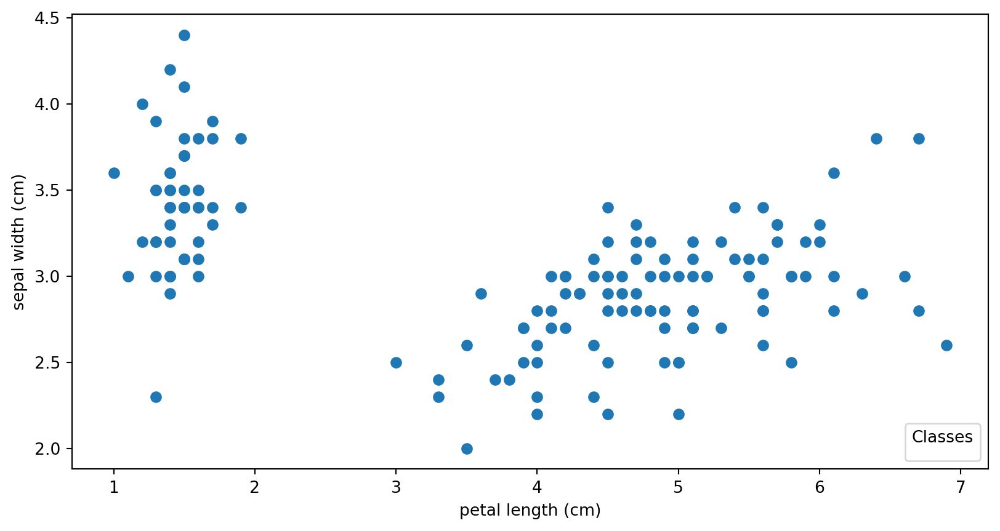
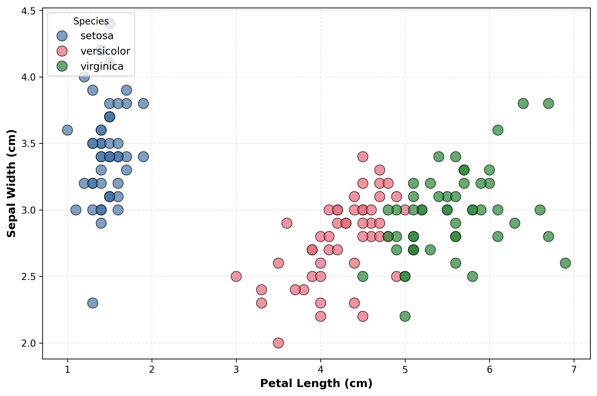

Clustering and Dimensionality Reduction
CS-GY 9223 - Fall 2025
Claudio Silva
NYU Tandon School of Engineering
2025-10-20
Agenda
- Clustering
- Introduction to unsupervised learning
- K-means clustering on IRIS dataset
- DBSCAN and other clustering methods
- Dimensionality Reduction
- The manifold hypothesis and intrinsic dimensionality
- Principal Component Analysis (PCA)
- Eigenvectors, eigenvalues, and covariance matrices
- Singular Value Decomposition (SVD)
- Local Linear Embedding (LLE)
- Preview: Non-linear Manifold Learning (t-SNE, UMAP)
Clustering
Etienne Bernard: “… the goal of clustering is to separate a set of examples into groups called clusters”
IRIS
# Code source: Gaël Varoquaux
# Modified for documentation by Jaques Grobler
# License: BSD 3 clause
#
import matplotlib.pyplot as plt
from sklearn import datasets
iris = datasets.load_iris()
_, ax = plt.subplots()
scatter = ax.scatter(iris.data[:, 2], iris.data[:, 1])
ax.set(xlabel=iris.feature_names[2], ylabel=iris.feature_names[1])
_ = ax.legend(
scatter.legend_elements()[0], iris.target_names, loc="lower right", title="Classes"
)IRIS
IRIS – another look

IRIS – clustering
IRIS – k-means
Wolfram Mathematica FindClusters
Wolfram Mathematica FindClusters
IRIS - classes
Recommended reading
Required https://www.wolfram.com/language/introduction-machine-learning/clustering/ link
https://en.wikipedia.org/wiki/Cluster_analysis
https://en.wikipedia.org/wiki/K-means_clustering
https://en.wikipedia.org/wiki/DBSCAN
Dimensionality Reduction
Input data may have thousands or millions of dimensions!
Dimensionality Reduction represents data with fewer dimensions
- easier learning – fewer parameters
- visualization – show high-dimensional data in 2D or 3D
- discover “intrinsic dimensionality” of the data
Dimensionality Reduction
- Assumption: data lies on a lower dimensional space
Slides based on material from Prof. Yi Zhang
Visualizing the Manifold Hypothesis: Images of ‘3’ Perturbed by Non-linear Operations
What operations did we perform? What’s the intrinsic dimensionality?
Here the underlying manifold is non-linear
Slides based on material from Christopher Bishop
Digits
Digits - 0
array([[ 0., 0., 5., 13., 9., 1., 0., 0.],
[ 0., 0., 13., 15., 10., 15., 5., 0.],
[ 0., 3., 15., 2., 0., 11., 8., 0.],
[ 0., 4., 12., 0., 0., 8., 8., 0.],
[ 0., 5., 8., 0., 0., 9., 8., 0.],
[ 0., 4., 11., 0., 1., 12., 7., 0.],
[ 0., 2., 14., 5., 10., 12., 0., 0.],
[ 0., 0., 6., 13., 10., 0., 0., 0.]])Digits - 1
array([[ 0., 0., 0., 12., 13., 5., 0., 0.],
[ 0., 0., 0., 11., 16., 9., 0., 0.],
[ 0., 0., 3., 15., 16., 6., 0., 0.],
[ 0., 7., 15., 16., 16., 2., 0., 0.],
[ 0., 0., 1., 16., 16., 3., 0., 0.],
[ 0., 0., 1., 16., 16., 6., 0., 0.],
[ 0., 0., 1., 16., 16., 6., 0., 0.],
[ 0., 0., 0., 11., 16., 10., 0., 0.]])Digits
Digits
Computing Random projection embedding...
Computing Truncated SVD embedding...
Computing Linear Discriminant Analysis embedding...
Computing Isomap embedding...
Computing Standard LLE embedding...
Computing Modified LLE embedding...
Computing Hessian LLE embedding...
Computing LTSA LLE embedding...
Computing MDS embedding...
Computing Random Trees embedding...
Computing Spectral embedding...
Computing t-SNE embedding...
Computing NCA embedding...Principal Component Analysis
- PCA is directly related to the eigenvectors and eigenvalues of covariance matrices.
- Lets so make a quick review of eigenvectors, eigenvalues, and covariance matrices.
Slides based on material from Prof. Luis Gustavo Nonato
Eigenvectors and Eigenvalues
Given a \(d \times d\) matrix \(A\), a pair \((\lambda, u)\) that satisfies
\(A u = \lambda u\)
is called eigenvalue \(\lambda\) and corresponding eigenvector \(u\) of \(A\).
Symmetric Matrices
- \(\lambda \in \mathbb{R}\) and \(u \in \mathbb{R}^d\) (no complex numbers involved)
- The eigenvectors are orthogonal
Covariance Matrix
Covariance Matrix

Covariance Matrix
Principal Component Analysis: intuition
Principal Component Analysis: intuition
Principal Component Analysis
Principal Component Analysis
PCA of digits
PCA of digits
Scaling Up
- Covariance matrix can be really big!
- \(\Sigma\) is \(n\) by \(n\)
- 10000 features are not uncommon
- computing eigenvectors is slow…
- Solution: Singular Value Decomposition (SVD)
- Finds the \(k\) largest eigenvectors
- Widely implemented robustly in major packages
Singular Value Decomposition (SVD)
- https://en.wikipedia.org/wiki/Singular_value_decomposition
Dimensionality Reduction Techniques
- https://en.wikipedia.org/wiki/Dimensionality_reduction
- Principal component analysis (PCA)
- Non-negative matrix factorization (NMF)
- Linear discriminant analysis (LDA)
- t-SNE
- UMAP
- many others
Local Linear Embedding
Preserving Local Manifold Neighborhoods
LLE
https://www.science.org/doi/10.1126/science.290.5500.2323
PCA vs LLE
Beyond PCA: Non-linear Methods
- t-SNE (t-Distributed Stochastic Neighbor Embedding)
- Preserves local neighborhood structure
- Great for visualization of clusters
- Non-linear, adapts to different regions of data
- UMAP (Uniform Manifold Approximation and Projection)
- Faster than t-SNE, scales better
- Better preserves global structure
- Based on topological data analysis
Next Week: Advanced Dimensionality Reduction
- Deep dive into t-SNE
- How it works (probability distributions, KL divergence)
- Critical parameters (perplexity)
- Common pitfalls and how to avoid them
- UMAP in detail
- Comparison with t-SNE
- Parameter tuning (n_neighbors, min_dist)
- Interactive dimensionality reduction